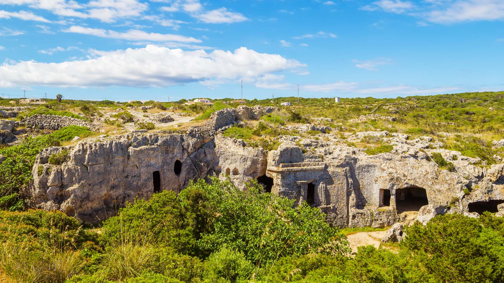

Informacion General
Encuentra todo lo que se debe saber sobre la necrópolis de Cala Morell, uno de los yacimientos prehistóricos de la Menorca Talayótica. ¡Sigue leyendo!
Menorca es un verdadero museo arqueológico al aire libre con un patrimonio excepcional, pincha aquí para conocer algunos de los más importantes yacimientos prehistóricos que pueden visitarse en la isla.
La necrópolis de cala Morell, situada en la cala del mismo nombre, en el norte del término municipal de Ciutadella, es uno de los cementerios prehistóricos más bellos por la perfección y belleza de algunas de las fachadas y por la capacidad plástica con la que fueron excavadas las tumbas.
Está situada en el barranco que desemboca en la cala. Las primeras tumbas documentadas datan de alrededor del 1600 a. Son dos pequeños hipogeos, cámaras excavadas artificialmente en la roca, con un pasillo de piedras como acceso. En el interior se localizaron algunas cerámicas correspondientes a los antiguos ajuares que acompañaban a los difuntos enterrados. Más tarde, ya a la edad del hierro (partir del siglo VI a. C.), la necrópolis documenta su máxima expansión. Los hipogeos, de grandes dimensiones (de entre 120 y 170 m2 ) , se convierten en grandes panteones en los que se depositan colectivamente los difuntos. El ritual de entierro consistía en cubrir a los difuntos y sus ajuares con cal viva.
Las tumbas de esta necrópolis están concebidas para que los vivos rindan culto a los muertos. Es habitual que algunas de las cuevas funerarias tuvieran una especie de atrio frente a la puerta donde se ofrendaban alimentos contenidos en cerámicas. Del conjunto de hipogeos destaca el número 4, que cuenta con una fachada esculpida que reproduce elementos arquitectónicos de influencia etrusca y púnica.
En algunas partes de las paredes de los barrancos se pueden observar capadas de moro , receptáculos circulares u oblongos en los que posiblemente se depositaban urnas funerarias infantiles.
Fue declarado bien de interés cultural (1985).